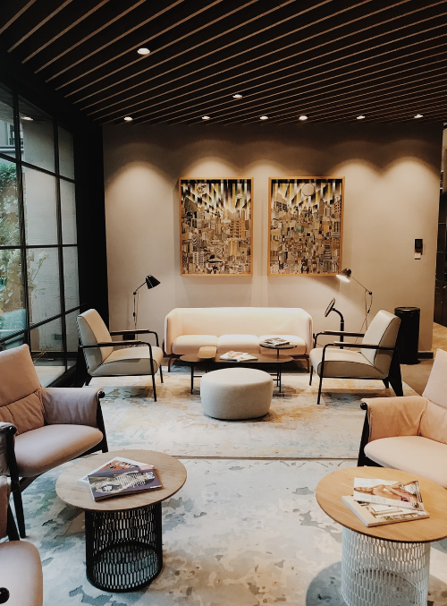

Your Home, With Love
Choose from a zillion collections
|
 |
 |
 |
Our Products, Our Pride
Furniture is a big deal in the design industry. A well-executed concept can result
in a timeless piece of furniture that never goes out of style. “Furniture builds up
over time - the more the furniture recorder traces of the owner’s whereabouts
and lifestyle, the more it will increase its value for the owner,” says Johansen.
“The leather’s ability to expand is utilized as the owner has the opportunity to
influence and shape the product with time.”
Take me to Google